Propuesta 6 · Administración en la app
La versión final del concilio (C-248): la propuesta «consistencia», que eligieron los tres jueces, con las fallas que señalaron corregidas y los injertos en que coincidieron. El Módulo D y los indicadores del A.5 dentro de la app (C-247; ADR-0022), con la navegación de los módulos de lavandería y repartidor. Cada pantalla abre su HTML, que se navega con sus enlaces. Datos de prueba. Lo que espera una DD va en ámbar con su número. Con las correcciones de la verificación final: las pantallas 56 a 70 son nuevas y van junto a las de su función. Detalle en NOTAS.md.
Entrada y navegación del módulo
Cláusula I (p. 3); A.3, Control de acceso (p. 20); A.4.3 (p. 21)
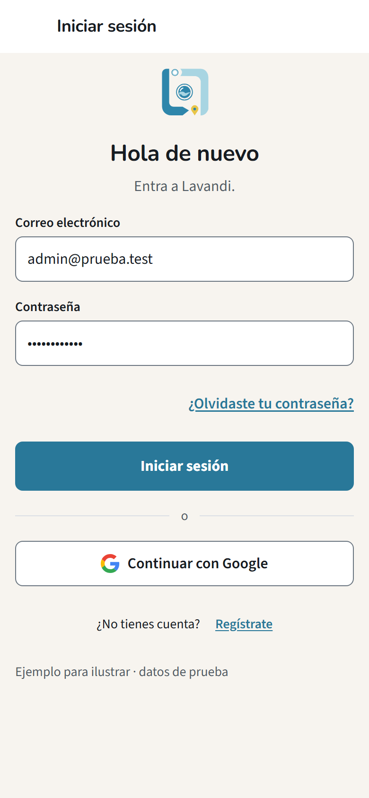
01 · Inicio de sesiónLa administración entra con su correo y su contraseña, en la misma pantalla que los otros rolesNSV-2026-001-v8.pdf:3:Cláusula I; :20:ANEXO A, Sección A.3 (Control de acceso); administracion-app-E01 y E02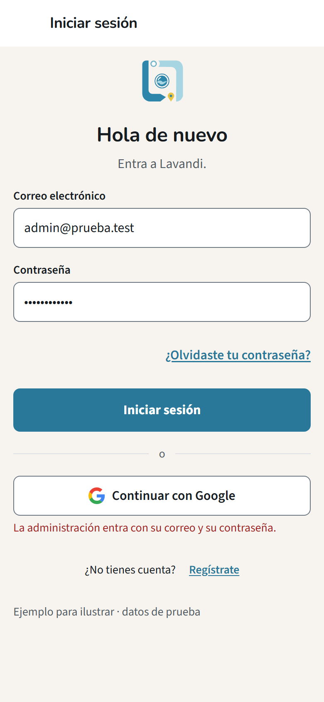
02 · Inicio de sesión con GoogleCon Google, la administración recibe el mensaje bajo el botón y no se guarda sesiónNSV-2026-001-v8.pdf:16:ANEXO A, Sección A.3 (Módulo A #2); :10:Cláusula X; administracion-app-E08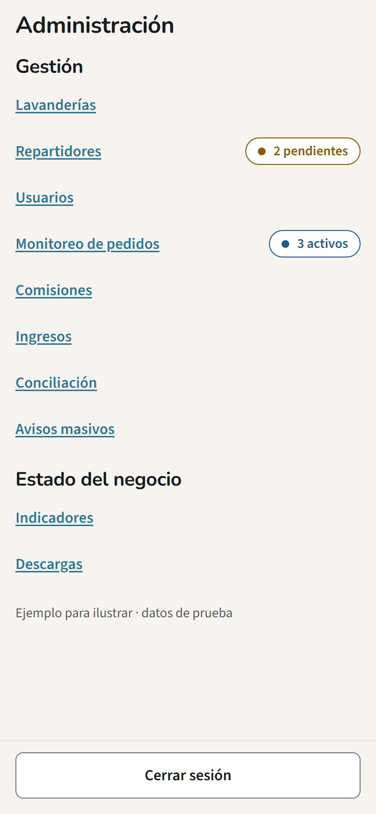
03 · Inicio del móduloLo que ve al entrar: el Módulo D en su orden bajo «Gestión», y los indicadores y las descargas bajo «Estado del negocio»; junto a Repartidores, los pendientes, y junto a Monitoreo, los pedidos activos; abajo, Cerrar sesiónNSV-2026-001-v8.pdf:19:ANEXO A, Sección A.3 (Módulo D #1 a #7); NSV-2026-001-v8.pdf:22:ANEXO A, Sección A.5; administracion-app-E03, E19 y E28 (los dos conteos piden una línea en E03)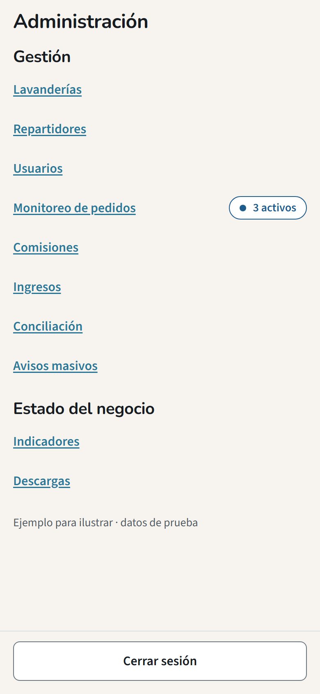
56 · Inicio del módulo, sin repartidores pendientesSin repartidores pendientes, «Repartidores» no lleva insignia; la de los pedidos activos sigueNSV-2026-001-v8.pdf:19:ANEXO A, Sección A.3 (Módulo D #1 a #7); NSV-2026-001-v8.pdf:22:ANEXO A, Sección A.5; administracion-app-E03 y E19 (el conteo pide una línea en E03)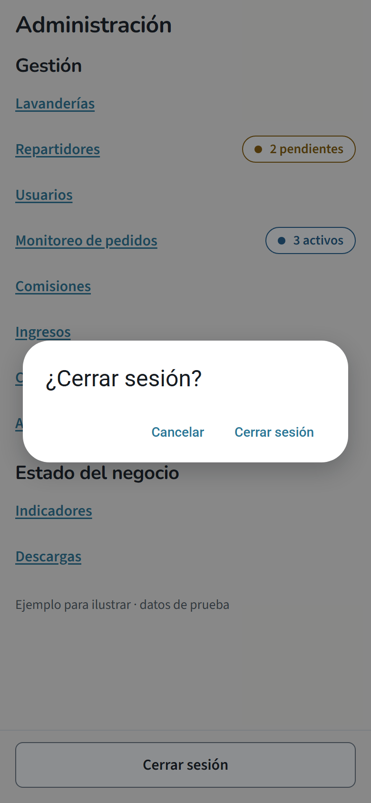
04 · Cerrar sesiónLa confirmación del sistema antes de cerrar la sesiónNSV-2026-001-v8.pdf:20:ANEXO A, Sección A.3 (Control de acceso); administracion-app-E04; registro-E13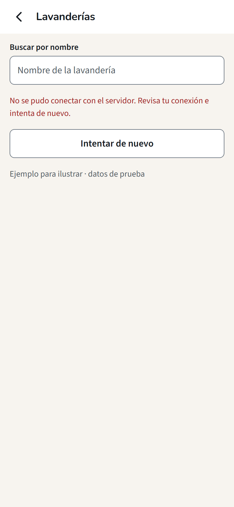
05 · Sin conexiónSi la consulta no llega al servidor, la pantalla lo dice con el mensaje de la app y ofrece intentar de nuevoNSV-2026-001-v8.pdf:19:ANEXO A, Sección A.3 (Módulo D #1); movil/src/acceso/mensajes.ts:7 (sinConexion); movil/src/repartidor/textos.ts:38F-D01 · Gestión de lavanderías
Módulo D #1 (p. 19)
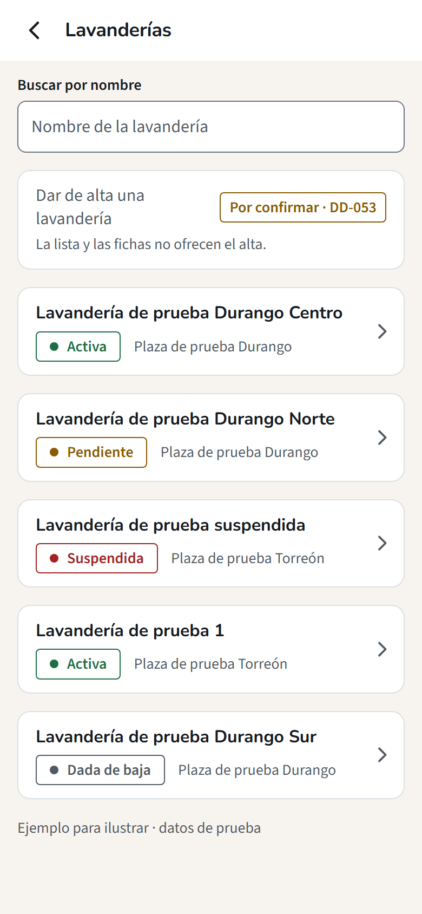
06 · LavanderíasTodas las lavanderías de todas las plazas, con su estado y su plaza, con búsqueda por nombre; el alta espera DD-053 y no hay botónNSV-2026-001-v8.pdf:19:ANEXO A, Sección A.3 (Módulo D #1, «Alta, baja, suspensión y edición»); administracion-app-E13 y E17 (DD-053)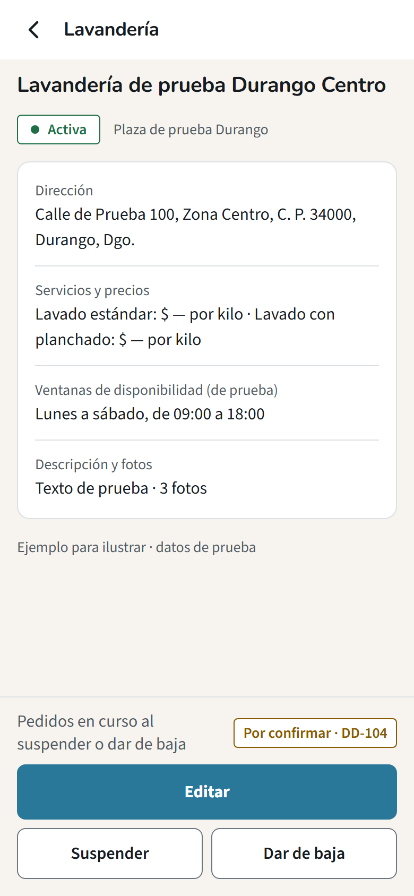
07 · Ficha de una lavandería activaSus datos editables, su estado y su plaza; abajo, fijas, solo las acciones que su estado permite, y sobre ellas lo que espera DD-104NSV-2026-001-v8.pdf:19:ANEXO A, Sección A.3 (Módulo D #1); administracion-app-E13, E15, E16 y E18 (DD-104); EstadoDeLaLavanderia.php:24-41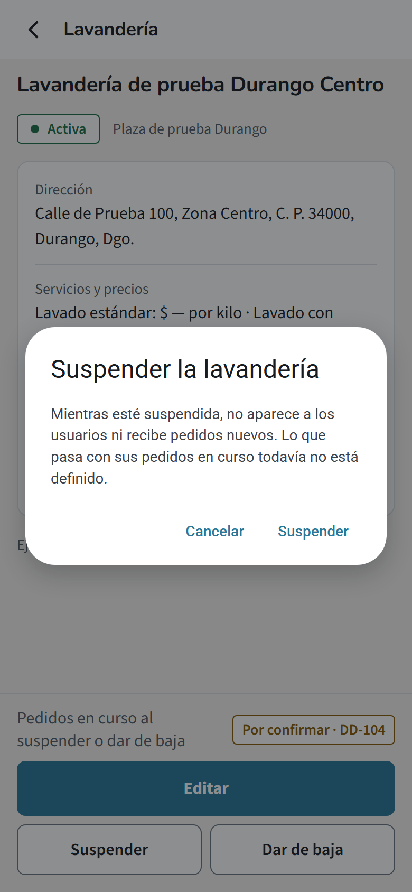
08 · Suspender una lavanderíaLa confirmación del sistema, en palabras del dueño; lo que espera DD-104 se queda en la fichaNSV-2026-001-v8.pdf:19:ANEXO A, Sección A.3 (Módulo D #1, «suspensión»); administracion-app-E15 y E18; AccionesDeEstado.php:50-5157 · Dar de baja una lavanderíaLa confirmación del sistema con el texto del panel; lo que espera DD-104 se queda en la fichaNSV-2026-001-v8.pdf:19:ANEXO A, Sección A.3 (Módulo D #1, «baja»); administracion-app-E16 y E18 (DD-104); AccionesDeEstado.php:32-34 (con «desde la app» en lugar de «desde el panel»)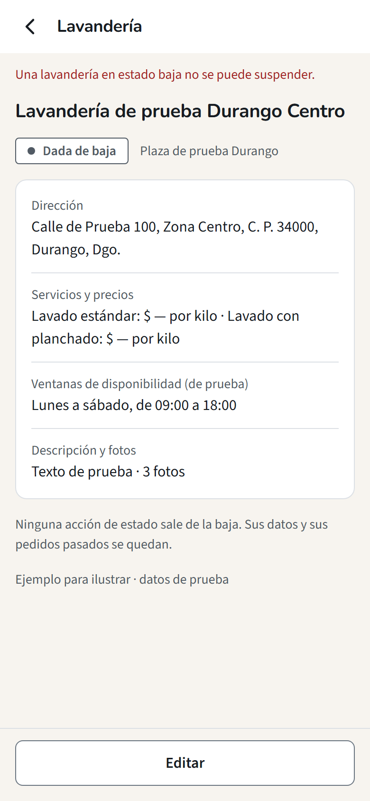
58 · Una acción que otra sesión ya hizoOtra sesión la dio de baja mientras tanto: al tocar Suspender, el servidor responde 409 con el mensaje de la clase de dominio, la app lo muestra y vuelve a consultar la ficha, que ya no ofrece acciones de estadoNSV-2026-001-v8.pdf:19:ANEXO A, Sección A.3 (Módulo D #1); administracion-app-E12 (409) y E16; TransicionNoPermitida.php:16; Lavanderia.php:38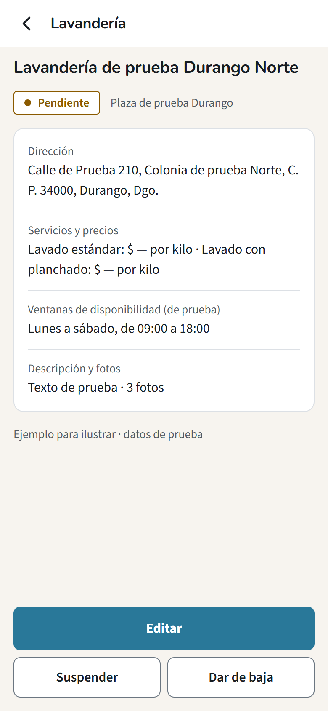
09 · Ficha de una lavandería pendientePendiente: Editar, Suspender y Dar de baja; el alta no se ofrece (DD-053, en la lista)NSV-2026-001-v8.pdf:19:ANEXO A, Sección A.3 (Módulo D #1); administracion-app-E13 y E17; EstadoDeLaLavanderia.php:24-27 y :37-40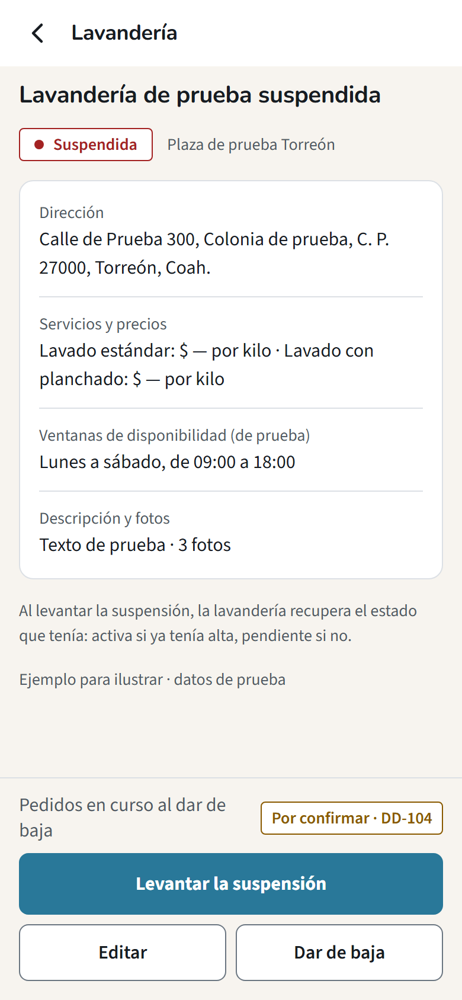
10 · Ficha de una lavandería suspendidaSuspendida: Levantar la suspensión como principal, Editar y Dar de baja como secundarios, con lo que pasa al levantarlaNSV-2026-001-v8.pdf:19:ANEXO A, Sección A.3 (Módulo D #1); administracion-app-E15 y E18 (DD-104); AccionesDeEstado.php:68-69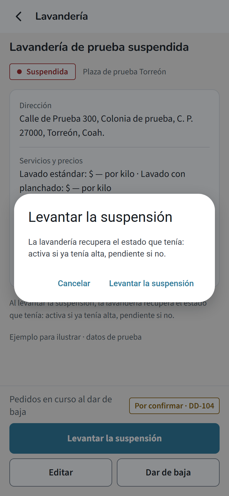
59 · Levantar la suspensión de una lavanderíaLa confirmación del sistema con el texto del panel: recupera el estado que teníaNSV-2026-001-v8.pdf:19:ANEXO A, Sección A.3 (Módulo D #1, «suspensión»); administracion-app-E15; AccionesDeEstado.php:68-70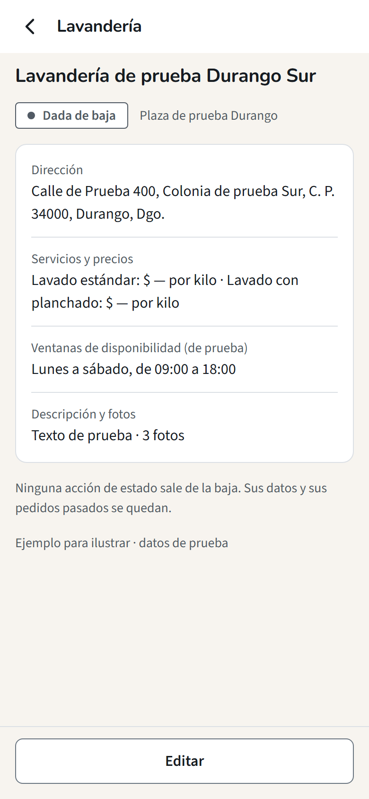
11 · Ficha de una lavandería dada de bajaDada de baja: ninguna acción de estado; Editar se queda como secundario, como en el panelNSV-2026-001-v8.pdf:19:ANEXO A, Sección A.3 (Módulo D #1, «baja»); administracion-app-E14 y E16; LavanderiasTable.php:44 (el panel no esconde Editar)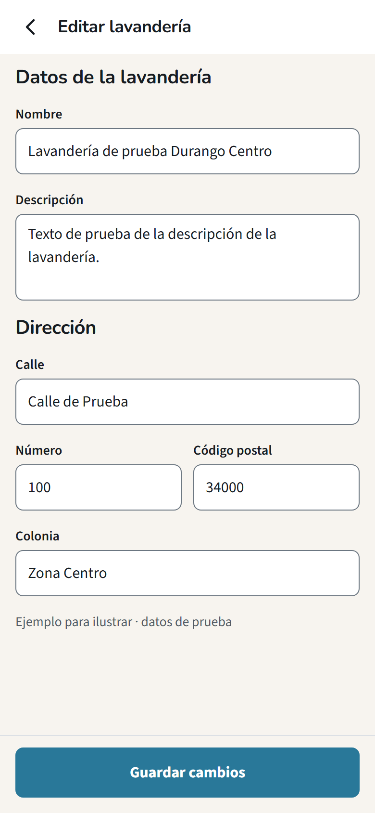
12 · Editar una lavanderíaLa edición, con las piezas del formulario del registro de la lavandería; Guardar cambios fijo abajoNSV-2026-001-v8.pdf:19:ANEXO A, Sección A.3 (Módulo D #1, «edición»); administracion-app-E14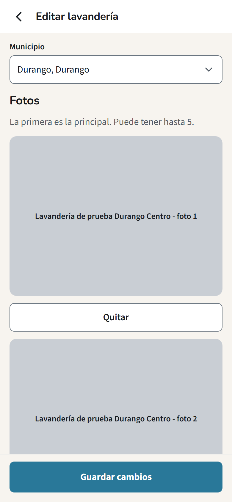
60 · Editar una lavandería: municipio y fotosMás abajo: el municipio, que cierra la dirección, y las fotos del perfil, la primera la principal, cada una con Mover antes y QuitarNSV-2026-001-v8.pdf:19:ANEXO A, Sección A.3 (Módulo D #1, «edición»); administracion-app-E14 («su foto», «sus fotos»); alta-lavanderias-E26 a E30; FormularioDeLaLavanderia.tsx:217-264; config/fotos.php:44 (5 por omisión)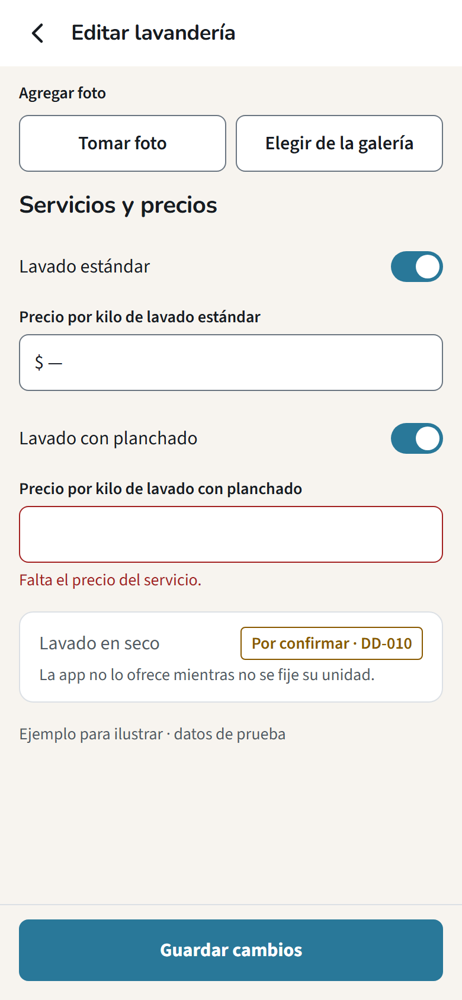
13 · Editar una lavandería: servicios y preciosMás abajo: agregar otra foto, y los servicios y precios (sin cifra), con el error de un campo junto a él; el lavado en seco espera DD-010 y no lleva interruptorNSV-2026-001-v8.pdf:19:ANEXO A, Sección A.3 (Módulo D #1, «edición»); administracion-app-E14; ReglasDeLaLavanderia.php:142; ServiciosYVentanas.php:22-30 y movil/src/alta-lavanderias/formulario.ts:5-7 (DD-010)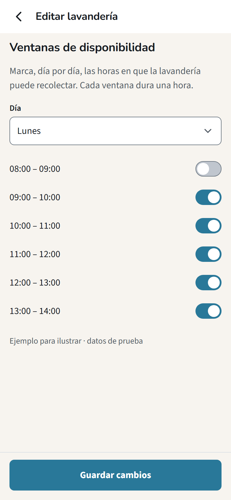
61 · Editar una lavandería: horarioAl final: las ventanas de disponibilidad, de una hora, día por día, con el día en el SelectorNSV-2026-001-v8.pdf:19:ANEXO A, Sección A.3 (Módulo D #1, «edición»); administracion-app-E14 («su horario»); alta-lavanderias-E21 y E22; FormularioDeLaLavanderia.tsx:309-338; movil/src/alta-lavanderias/textos.ts:46-48F-D02 · Gestión de repartidores
Módulo D #2 (p. 19); Módulo C #1 (p. 18)
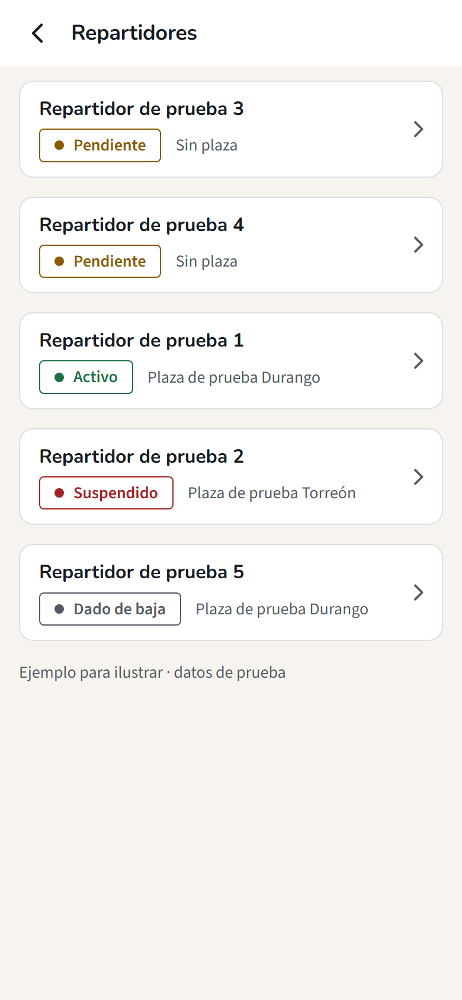
14 · RepartidoresTodos los repartidores en cualquier estado, los pendientes sin plaza primeroNSV-2026-001-v8.pdf:19:ANEXO A, Sección A.3 (Módulo D #2); :18 (Módulo C #1); administracion-app-E19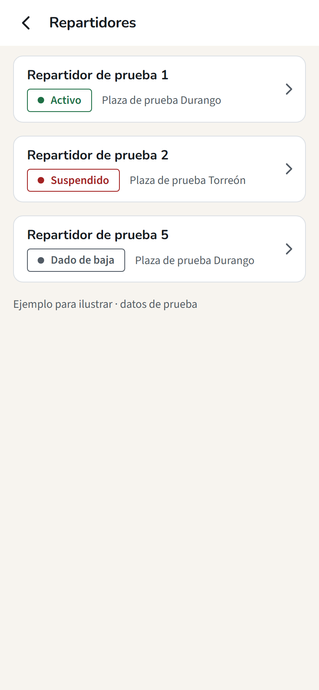
62 · Repartidores, sin pendientesSin registros por autorizar, la lista empieza por los activos, sin ningún pendiente arribaNSV-2026-001-v8.pdf:19:ANEXO A, Sección A.3 (Módulo D #2); administracion-app-E19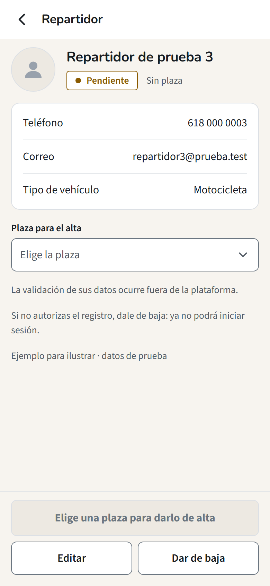
15 · Ficha de un repartidor pendientePendiente: elegir la plaza (sin plaza no se manda el alta), editar o dar de baja; qué hacer si no se autorizaNSV-2026-001-v8.pdf:19:ANEXO A, Sección A.3 (Módulo D #2); :18 (Módulo C #1: «El alta, validación y autorización del repartidor corresponden a EL CLIENTE»); administracion-app-E20 y E22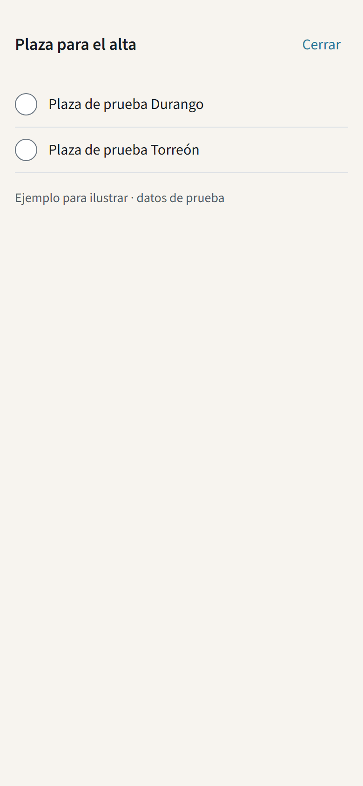
16 · Elegir la plaza del altaLa hoja del Selector con las plazas para el alta: pantalla completa en Android, pageSheet en iPhoneNSV-2026-001-v8.pdf:19:ANEXO A, Sección A.3 (Módulo D #2, «Alta»); administracion-app-E20 (GET /api/administracion/plazas)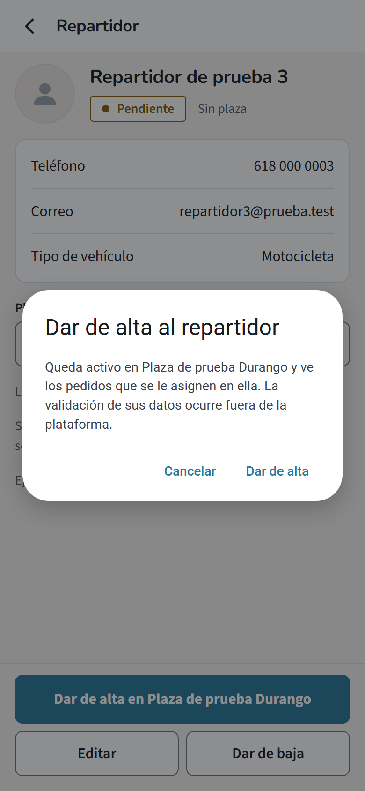
17 · Dar de alta a un repartidorCon la plaza elegida, el botón la nombra y pide la confirmación del sistemaNSV-2026-001-v8.pdf:19:ANEXO A, Sección A.3 (Módulo D #2, «Alta»); :18 (Módulo C #1); administracion-app-E20; AccionesDeEstado.php de Repartidores:40-41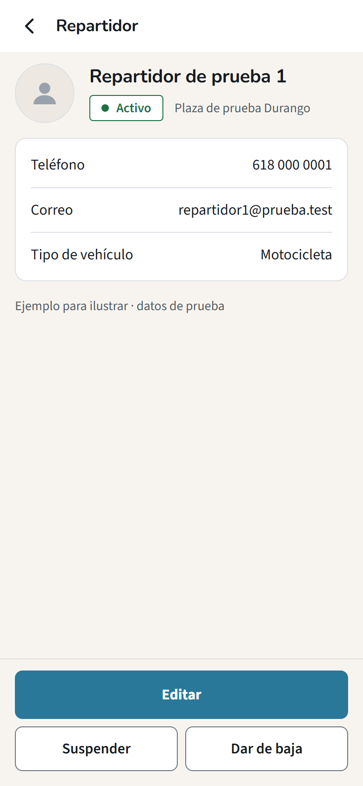
18 · Ficha de un repartidor activoActivo: editar, suspender o dar de baja, fijos abajoNSV-2026-001-v8.pdf:19:ANEXO A, Sección A.3 (Módulo D #2); administracion-app-E19, E21 y E22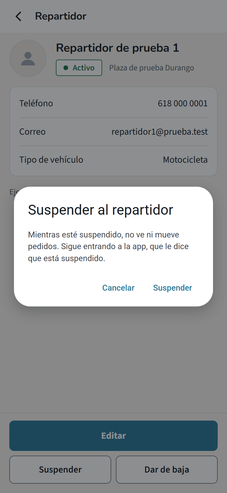
63 · Suspender a un repartidorLa confirmación del sistema con el texto del panelNSV-2026-001-v8.pdf:19:ANEXO A, Sección A.3 (Módulo D #2, «suspensión»); administracion-app-E21; AccionesDeEstado.php de Repartidores:66-68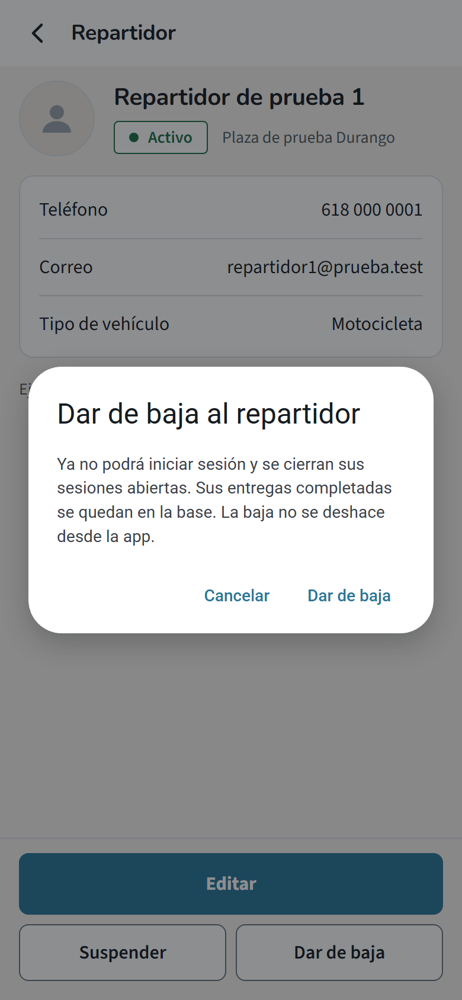
64 · Dar de baja a un repartidorLa confirmación del sistema con el texto del panelNSV-2026-001-v8.pdf:19:ANEXO A, Sección A.3 (Módulo D #2, «baja»); administracion-app-E22; AccionesDeEstado.php de Repartidores:102-104 (con «desde la app» en lugar de «desde el panel»)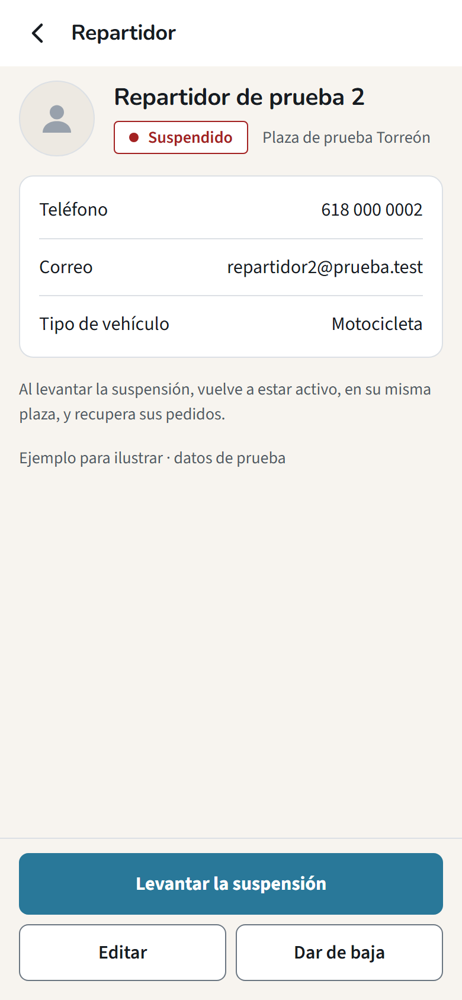
19 · Ficha de un repartidor suspendidoSuspendido: Levantar la suspensión como principal, con lo que pasa al levantarla; Editar y Dar de bajaNSV-2026-001-v8.pdf:19:ANEXO A, Sección A.3 (Módulo D #2, «suspensión»); administracion-app-E21; AccionesDeEstado.php de Repartidores:84-85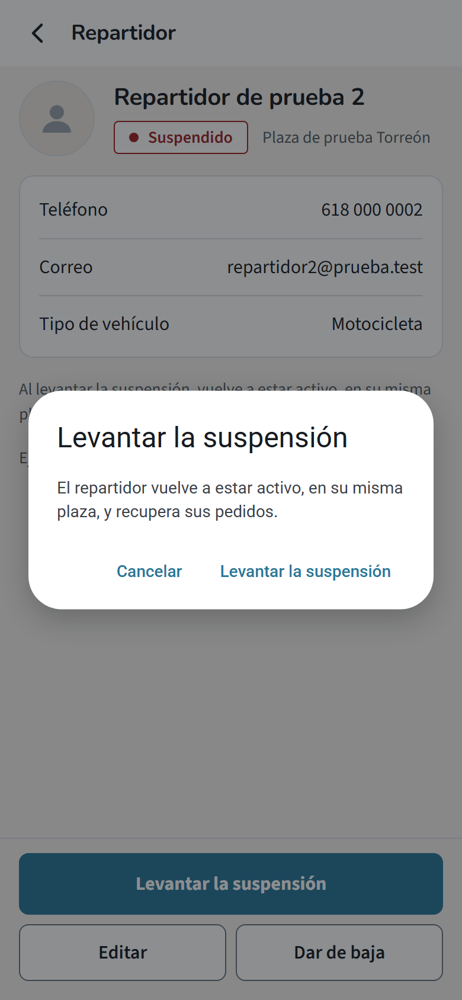
65 · Levantar la suspensión de un repartidorLa confirmación del sistema con el texto del panelNSV-2026-001-v8.pdf:19:ANEXO A, Sección A.3 (Módulo D #2, «suspensión»); administracion-app-E21; AccionesDeEstado.php de Repartidores:84-86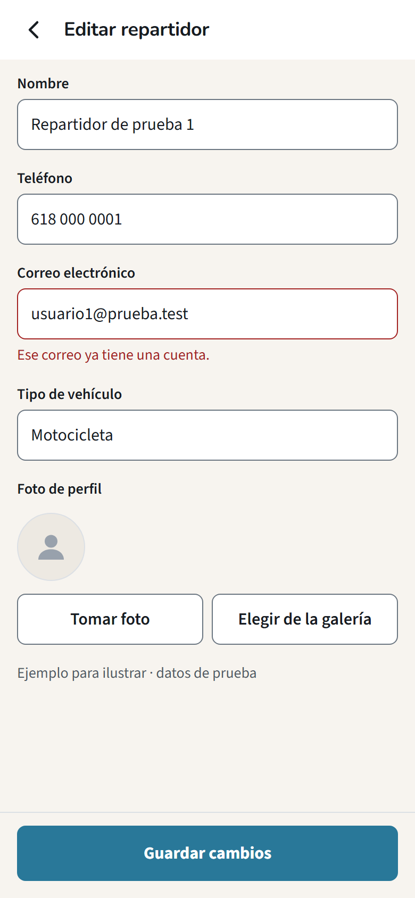
20 · Editar un repartidorNombre, teléfono, correo, foto y tipo de vehículo, con el error del correo junto a su campoNSV-2026-001-v8.pdf:19:ANEXO A, Sección A.3 (Módulo D #2, «edición»); administracion-app-E23; CorreoSinCuenta.php:17F-D03 · Gestión de usuarios
Módulo D #3 (p. 19)
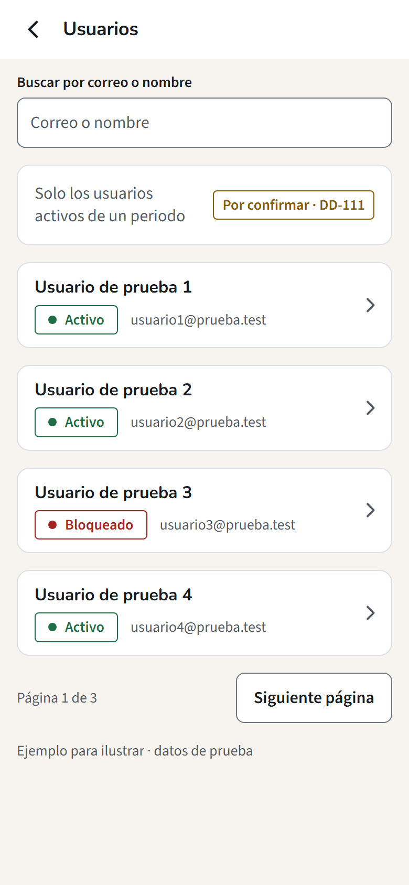
21 · UsuariosLas cuentas de usuario con su correo, su nombre y su estado, con búsqueda y en páginas; el filtro de activos espera DD-111NSV-2026-001-v8.pdf:19:ANEXO A, Sección A.3 (Módulo D #3, «Consulta de usuarios activos, historial y bloqueo»); administracion-app-E24 y E26 (DD-111)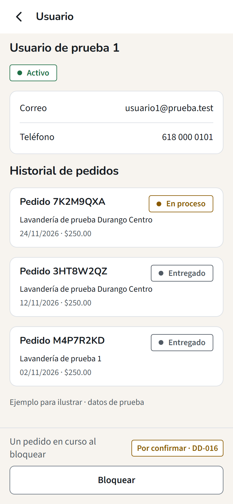
22 · Ficha de un usuarioSu cuenta y su historial, del más reciente al más antiguo; Bloquear fijo abajo, con lo que espera DD-016 sobre élNSV-2026-001-v8.pdf:19:ANEXO A, Sección A.3 (Módulo D #3, «historial y bloqueo»); administracion-app-E24, E25 y E27 (DD-016)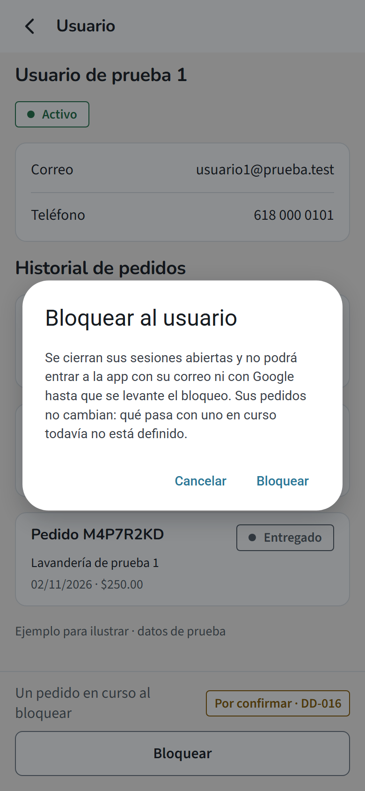
23 · Bloquear a un usuarioLa confirmación del sistema, en palabras del dueño; lo que espera DD-016 se queda en la fichaNSV-2026-001-v8.pdf:19:ANEXO A, Sección A.3 (Módulo D #3, «bloqueo»); administracion-app-E25 y E27; AccionesDeBloqueo.php:35-36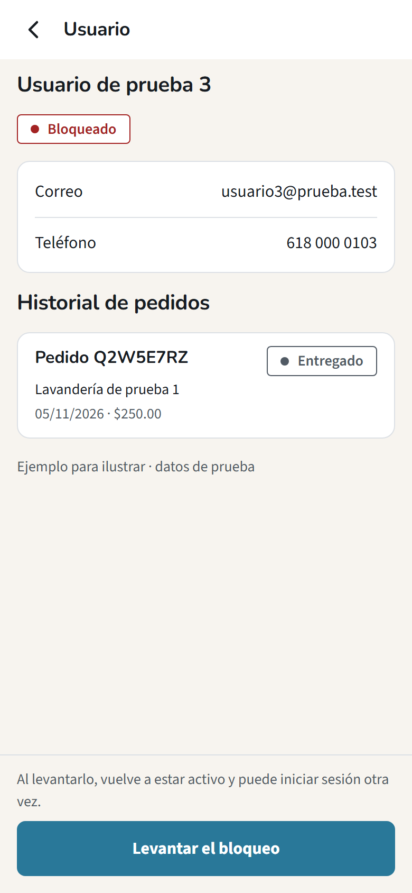
24 · Ficha de un usuario bloqueadoBloqueado: la ficha ofrece Levantar el bloqueo, con lo que pasa al levantarloNSV-2026-001-v8.pdf:19:ANEXO A, Sección A.3 (Módulo D #3, «bloqueo»); administracion-app-E25; AccionesDeBloqueo.php:54-55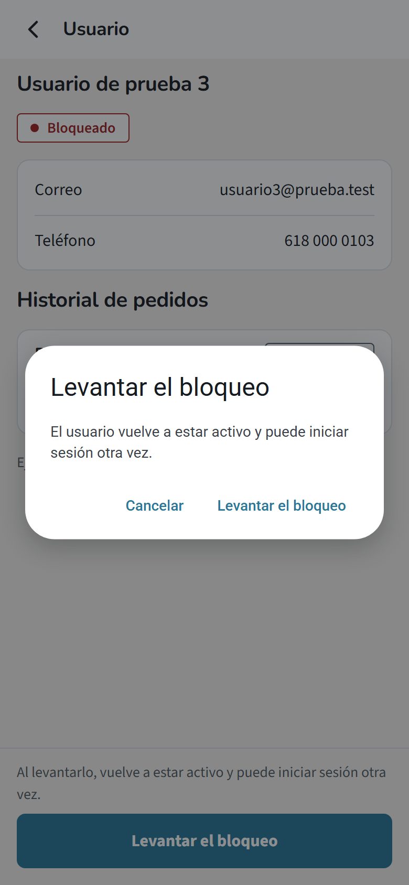
66 · Levantar el bloqueo de un usuarioLa confirmación del sistema con el texto del panelNSV-2026-001-v8.pdf:19:ANEXO A, Sección A.3 (Módulo D #3, «bloqueo»); administracion-app-E25; AccionesDeBloqueo.php:54-56F-D04 · Monitoreo de pedidos
Módulo D #4 (p. 19)
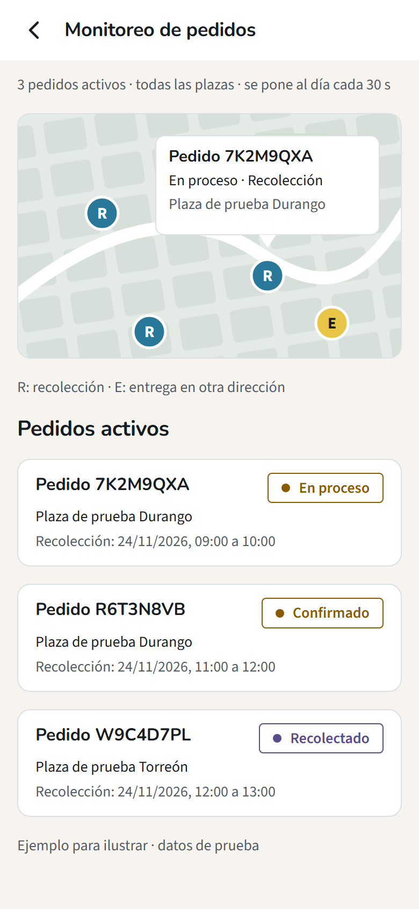
25 · Monitoreo de pedidosCuántos pedidos activos hay y que se pone al día cada 30 s; el mapa (R recolección, E entrega) y la lista, de la misma respuestaNSV-2026-001-v8.pdf:19:ANEXO A, Sección A.3 (Módulo D #4, «Vista en tiempo real de todos los pedidos activos con mapa»; Servicios externos, mapas); administracion-app-E28 a E30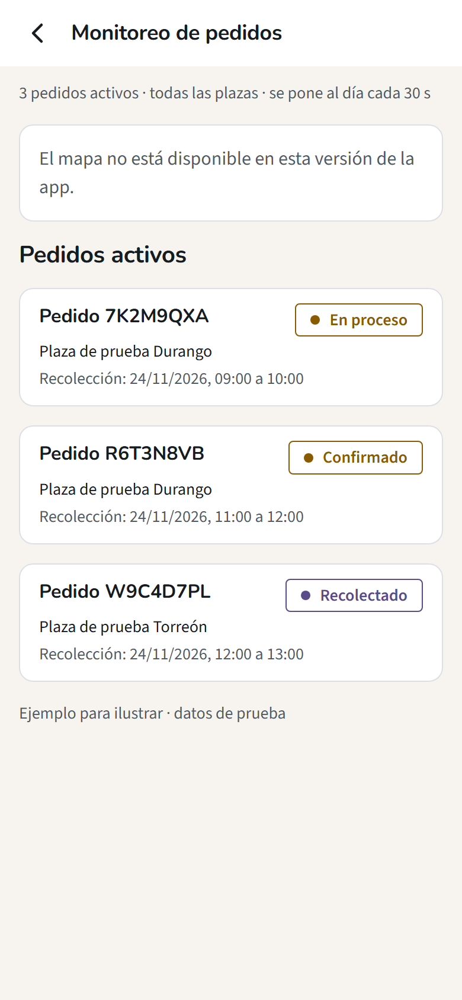
26 · Monitoreo sin mapaAndroid sin la llave del mapa: la pantalla lo dice y la lista sigueNSV-2026-001-v8.pdf:19:ANEXO A, Sección A.3 (Servicios externos, mapas); administracion-app-E30; movil/src/cercanas/textos.ts:24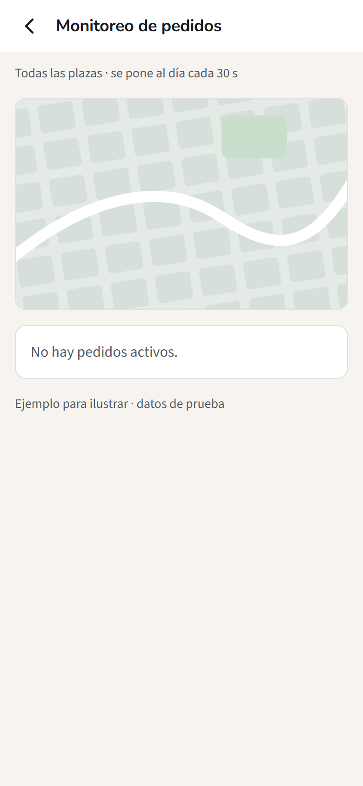
27 · Monitoreo sin pedidos activosSin pedidos activos: el mapa sin marcadores y el texto del panel; la consulta sigue cada 30 sNSV-2026-001-v8.pdf:19:ANEXO A, Sección A.3 (Módulo D #4); administracion-app-E28 y E29; MonitoreoDePedidos.php:84F-D05 · Comisiones
Módulo D #5 (p. 19)
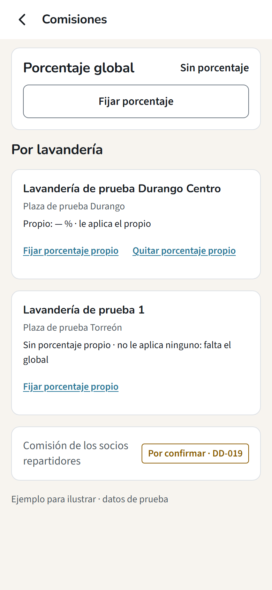
28 · ComisionesEl global sin número mientras no haya; cada lavandería dice en una frase qué le aplica: una con propio (sin cifra) y una sin él; el repartidor espera DD-019NSV-2026-001-v8.pdf:19:ANEXO A, Sección A.3 (Módulo D #5, «Porcentaje de comisión por socio o global»); administracion-app-E32, E33 y E35 (DD-019)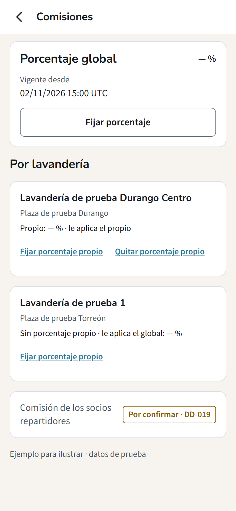
67 · Comisiones, con porcentaje globalCon un global guardado: su porcentaje (sin cifra) y desde cuándo rige; cada lavandería, el que le aplica y de dónde sale, el propio o el globalNSV-2026-001-v8.pdf:19:ANEXO A, Sección A.3 (Módulo D #5); administracion-app-E32 y E33; ComisionGlobal.php:72-83; ComisionesPorLavanderia.php:61-68 y :113-121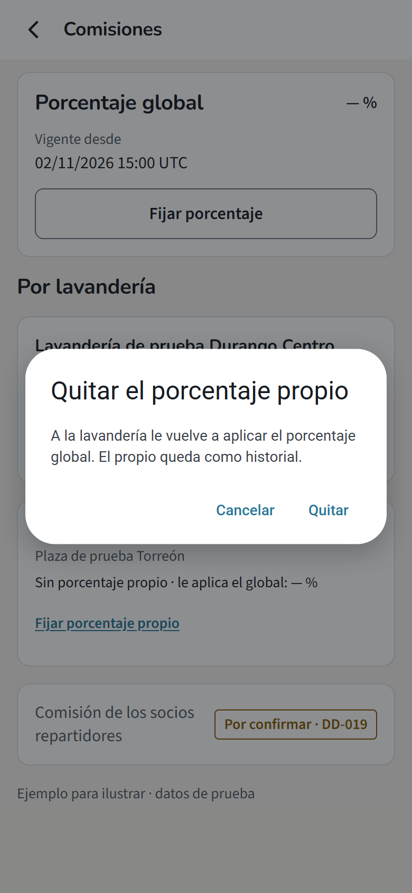
68 · Quitar el porcentaje propioLa confirmación del sistema con el texto del panel: a la lavandería le vuelve a aplicar el globalNSV-2026-001-v8.pdf:19:ANEXO A, Sección A.3 (Módulo D #5, «por socio»); administracion-app-E33; ComisionesPorLavanderia.php:91-93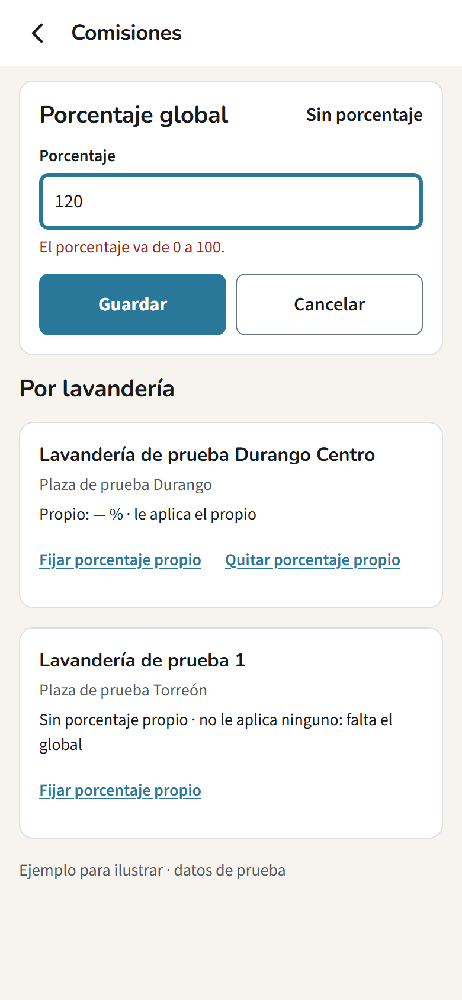
29 · Fijar el porcentaje globalEl global en edición dentro de su tarjeta, con el mensaje de fuera de rango junto al campo; la app no propone ningún númeroNSV-2026-001-v8.pdf:19:ANEXO A, Sección A.3 (Módulo D #5); administracion-app-E33 y E34; PorcentajesDeComision.php:51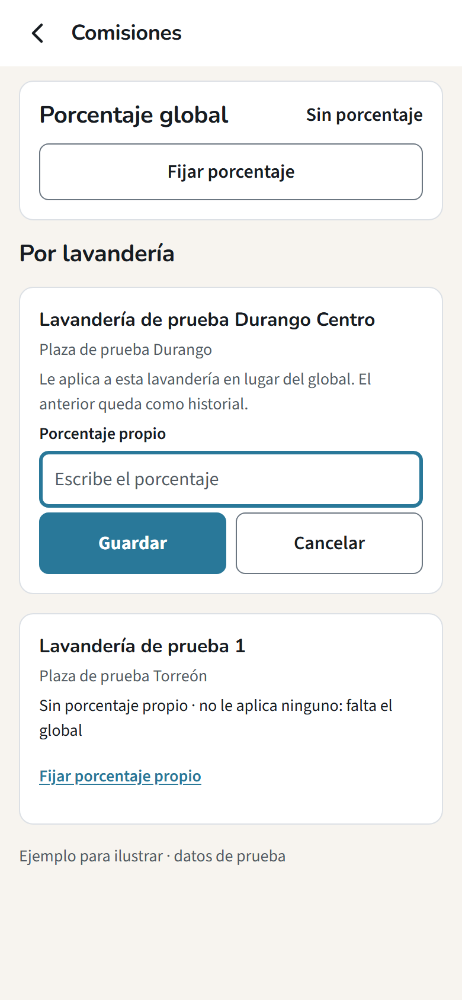
30 · Fijar el porcentaje propioEl propio de una lavandería en edición dentro de su tarjeta, vacío: la app no propone ningún númeroNSV-2026-001-v8.pdf:19:ANEXO A, Sección A.3 (Módulo D #5, «por socio»); administracion-app-E33; ComisionesPorLavanderia.php:72-76F-D06 · Reportes financieros
Módulo D #6 (p. 19)
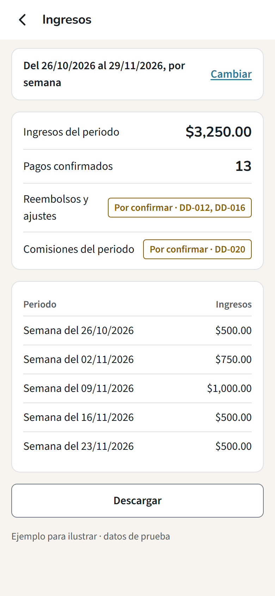
31 · IngresosEl rango plegado con «Cambiar»; el total, los pagos y el de cada semana, con las mismas cifras de F-I09; reembolsos y comisiones del periodo en ámbarNSV-2026-001-v8.pdf:19:ANEXO A, Sección A.3 (Módulo D #6, «Ingresos por periodo, comisiones y conciliación con Conekta»); administracion-app-E37, E39 (DD-012, DD-016) y E40 (DD-020)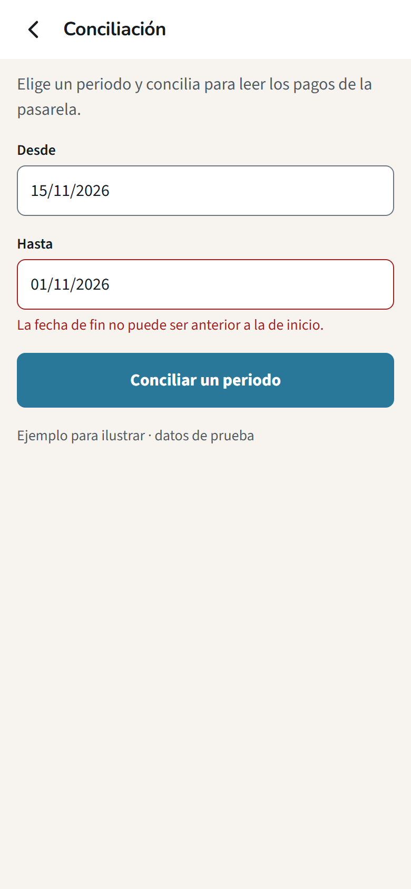
32 · Conciliación: elegir el periodoConciliar un periodo con la pasarela; el rango al revés se rechaza junto al campoNSV-2026-001-v8.pdf:19:ANEXO A, Sección A.3 (Módulo D #6, «conciliación»); administracion-app-E38; Conciliacion.php:157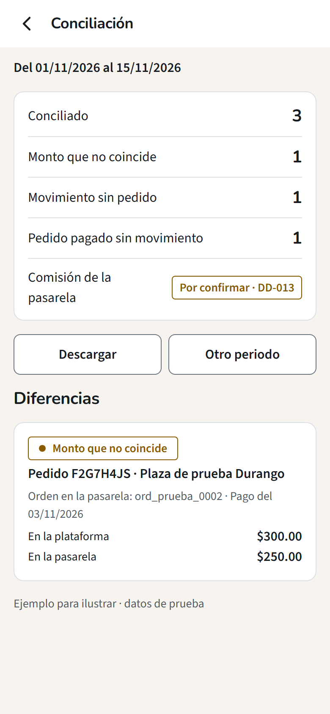
33 · Conciliación: el reporteCuántas filas hay de cada resultado, la comisión de la pasarela en ámbar, Descargar y Otro periodo; debajo empiezan las diferenciasNSV-2026-001-v8.pdf:19:ANEXO A, Sección A.3 (Módulo D #6); administracion-app-E38 y E41 (DD-013); ResultadoDeConciliacion.php:30-42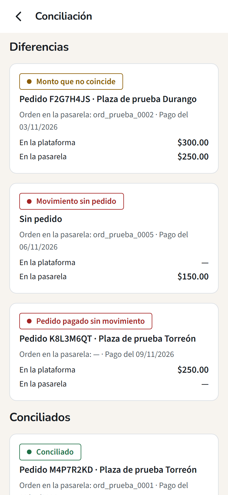
34 · Conciliación: las diferenciasMás abajo, una fila por cada diferencia, con su tipo, su folio y los montos de la plataforma y de la pasarela; después, las conciliadasNSV-2026-001-v8.pdf:19:ANEXO A, Sección A.3 (Módulo D #6); administracion-app-E38 («la tabla con cada diferencia y su tipo»); Conciliacion.php:141-153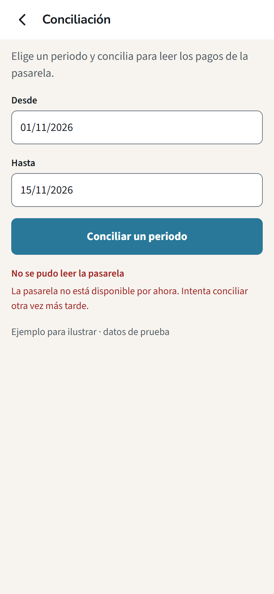
35 · Conciliación: la pasarela no respondeSi la pasarela no responde, la pantalla lo dice y no guarda nadaNSV-2026-001-v8.pdf:19:ANEXO A, Sección A.3 (Módulo D #6); administracion-app-E38 («No se pudo leer la pasarela»); Conciliacion.php:120-123F-D07 · Avisos masivos
Módulo D #7 (p. 19)
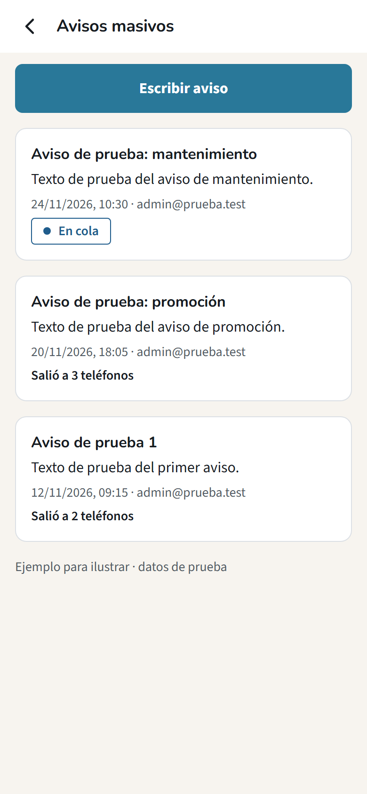
36 · Avisos masivosLos avisos enviados, del más reciente al más antiguo, con a cuántos teléfonos salió o «En cola»NSV-2026-001-v8.pdf:19:ANEXO A, Sección A.3 (Módulo D #7); administracion-app-E43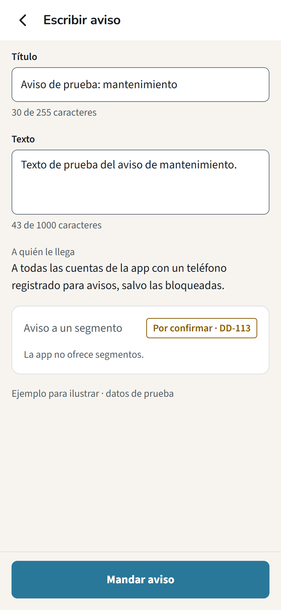
37 · Escribir un avisoTítulo y texto con sus topes (255 y 1000); a quién le llega, con el texto del panel; el aviso a un segmento en ámbar, sin ofrecerloNSV-2026-001-v8.pdf:19:ANEXO A, Sección A.3 (Módulo D #7, «Envío segmentado o global»); administracion-app-E42 y E44 (DD-113); AvisoMasivoForm.php:34-51; CreacionDeAvisoMasivo.php:37-40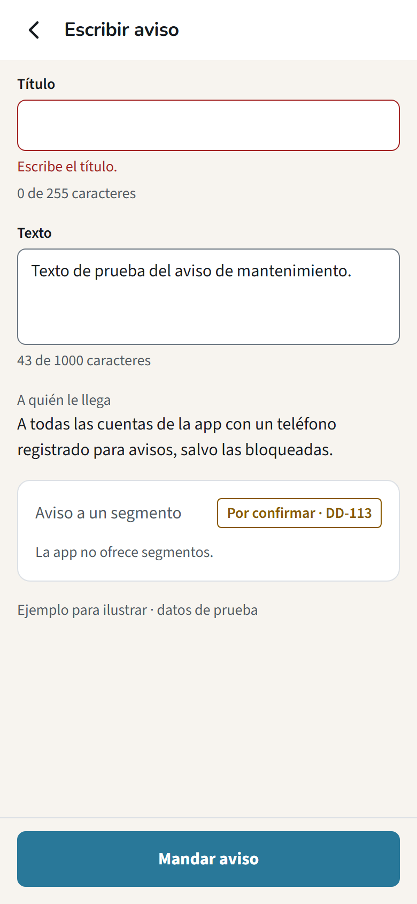
38 · Escribir un aviso: falta el títuloEl error 422 junto a su campo; no sale nadaNSV-2026-001-v8.pdf:19:ANEXO A, Sección A.3 (Módulo D #7); administracion-app-E42 (422 con el error de cada campo)39 · Confirmar el avisoLa confirmación: sale a todos los teléfonos registrados; sin confirmar no sale nadaNSV-2026-001-v8.pdf:19:ANEXO A, Sección A.3 (Módulo D #7, «global»); administracion-app-E4240 · Avisos masivos, sin avisosAntes del primer aviso: el texto del panel y el botón para escribirloNSV-2026-001-v8.pdf:19:ANEXO A, Sección A.3 (Módulo D #7); administracion-app-E43; AvisosMasivosTable.php:32A.5 · Indicadores del negocio
A.5 (p. 22); A.4.4 (p. 21)
A.5 · Descargas en CSV y Excel
A.5 (p. 22); A.4.4 (p. 21)